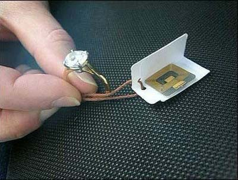
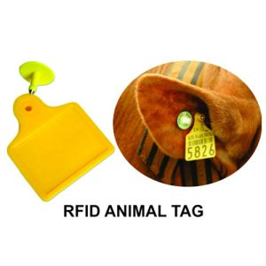

این تکنولوژی شناسایی از طریق امواج رادیویی را میسر کرده است
امواج رادیویی
تاریخچه
رادار، ابتدا موجهای خود را توسط فرستنده تولید کرده و توسط آنتن فرستنده آنرا میفرستاد و در صورتی که مانعی مانند یک شیء پرنده در آسمان، مقابل موجهای پراکنده شده قرار داشته باشد، موجهای ضعیفتری را بازمیتاباند
RFID تکنولوژی
در هر زمانی این نیاز وجود داشته باشد که یک انسان، شئ، کالا و یا هر چیز دیگر شناسایی شود و اطلاعاتی از آن در اختیار قرار گیرد، میتوان روی تکنولوژی
حساب کرد RFID
RFID تجهیزات و محصولات
• انتن •
• ریدر •
• کارت •
• تگ •
•...•
RFID Tag/label
تخصیص هویت منحصر به فرد به هر عنصر مورد نظر
بخش های تگ
:تراشه یا چیپ الکترونیکی دارای 4 بانک حافظه است
User Code/TID/Reserve Code/Ep Code
نحوه عملکرد تگ
_تگ ها داده ها را از طریق امواج رادیویی به آنتن و ریدر منتقل میکنند_چگونه؟
دسته بندی های مختلف
نوع کارکرد *
اکتیو/پسیو
نوع شکل ظاهری *
لیبلی/کارتی
نوع فرکانس *
lf/hf/uhf/nfc
نوع کاربرد *
لباس/دام
نوع شرایط محیطی *
مقاوم در برابر آب/ضربه/حرارت
چند نمونه تگ و کارت


درون چیپ تگ ها چه میگذرد؟
** RFID مغز یک سیستم **
Reader
امواج رادیویی را منتقل و دریافت میکنند
دسته بندی های مختلف
نوع حمل و نقل *
ثابت/قابل حمل
نوع اتصالات *
بلوتوثی/کابلی/وایفای
نوع فرکانس *
برد بلند/برد متوسط/برد کوتاه
براساس قابلیت ها *
دوربین/قرائت بارکد/gps
تعداد آنتن*
1/2/4/8/16
معمول ترین دسته بندی قرائتگرها، به صورت ثابت یا قابل حمل بودن آنهاست
Antenna
متداول ترین دسته بندی بر اساس نوع انتشار امواج آنان است. (خطی/دایرهای)
POWER
RFID کاربرد تکنولوژی
کارتهای مترویی
انبارداری هوشمند
پارکینگ هوشمند
فروشگاه هوشمند
خط تولید هوشمند
چالش ها و محدودیت ها
این سیستم در معرض مایعات دچار تضعیف میشود
(مایعات بر روی فرکانس ها تاثیر میگذارند)
فلزها و پالس های الکترومغناطیسی در سیستم اختلال ایجاد میکنند